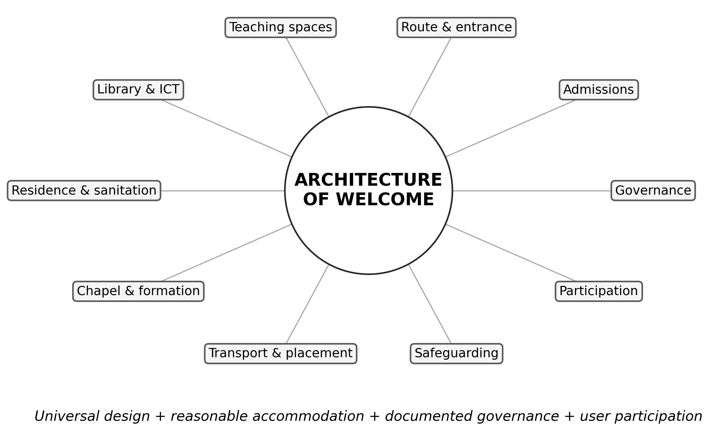

PIONEER PUBLICATION · ACCEPTED ARTICLE · REVIEW ARTICLE · SETEHEM: EDUCATION × HUMANITIES × INCLUSIVE DESIGN
Designing the Seminary for Human Diversity: Universal Design, Reasonable Accommodation and Disability-Inclusive Theological Education — A Review
UKULE, Peter¹*
¹Department of Christian Studies and Religious Communication, University of Abuja, Abuja, Nigeria
Corresponding author: rev.ukulepeter@gmail.com
Article | Volume/Issue | Published | ISSN | DOI |
|---|---|---|---|---|
e017 | 1(1) | August 2026 | Pending assignment | Pending registration |
Abstract
Background: Theological education combines academic learning, residential life, worship and field formation, so disability access cannot be reduced to a ramp or a single admissions clause.Objective: This review synthesises scholarship on universal design, reasonable accommodation, accessible admissions, disability justice and theological education to propose an integrated “architecture of welcome” for seminaries.Approach: A critical narrative review was conducted using the literature corpus assembled in the parent doctoral study, including theological-education research, higher-education inclusion scholarship, disability-rights literature and ecumenical guidance. The review is conceptual and does not claim systematic-review completeness.Synthesis: Effective inclusion requires ten linked domains: governance, admissions, routes and entrances, teaching spaces, library/ICT, residence and sanitation, chapel/formation, transport/placement, safeguarding and participation. Universal design should minimise predictable barriers at the system level; reasonable accommodation should address individual needs that remain. Written policy must specify ownership, procedure, budget, monitoring and remedy.Conclusion: A seminary is not accessible because it can improvise help for a particular student. It is accessible when diverse bodies are anticipated in ordinary institutional design and when accommodation is a transparent right-bearing process. Annual accessibility audits, user co-design and phased capital planning provide a practical route from goodwill to measurable institutional capability.
Keywords: universal design; reasonable accommodation; theological education; seminary accessibility; disability justice; inclusive pedagogy; Anglican formation
1. Introduction
The seminary is an unusually dense educational environment. Students do not merely attend lectures; they enter campuses, use libraries, live in residences, worship in chapels, travel to placements, participate in liturgical formation and depend on administrative decisions throughout the process. Accessibility must therefore be understood across the whole formation pathway.
Higher-education inclusion literature increasingly rejects the model in which a disabled student must repeatedly prove need to multiple offices after an institution has already been designed around a narrow norm. Universal design asks how predictable barriers can be removed in advance, while reasonable accommodation provides individualised adjustment when universal design is insufficient. Both are needed.
In theological education, access also has a theological meaning. A chapel without step-free participation, a field-placement system without accommodation or a curriculum that treats disability only as pastoral need communicates an implicit account of who is expected to learn and lead. The built, digital and administrative environment becomes a form of institutional theology.
2. Review approach
This critical narrative review draws on the literature corpus consolidated in the parent doctoral thesis, including Barton (2021), Carter (2021), Carter et al. (2023), Shaw (2024), Hardwick and Whittington-Walsh (2023), Lynch (2024), Murphy (2021), Degener (2016), the World Council of Churches (2003) and related sources. It also uses the parent study’s post-defence self-assessment framework as a synthesis device. The article does not claim a systematic search or meta-analytic estimate.
3. Universal design and reasonable accommodation
3.1 Universal design as anticipatory inclusion
Universal design shifts the timing of accessibility. Instead of waiting for a student to encounter a barrier and then negotiating an exception, the institution anticipates human diversity during planning. In teaching, this means multiple ways to access materials, participate and demonstrate learning. In the built environment, it means step-free routes, usable circulation and accessible sanitation. In digital systems, it means compatibility, readable structure and multiple formats.
Universal design should not be oversold as a complete solution. Murphy (2021) cautions against treating Universal Design for Learning as an evidence-free slogan, and disability communities repeatedly emphasise that individual needs vary. The appropriate relationship is complementary: universal design reduces predictable barriers; reasonable accommodation responds to needs that remain.
3.2 Reasonable accommodation as a governance process
Reasonable accommodation requires more than willingness. A credible process should identify the responsible office or person, specify how a request is made, define the evidence needed, protect confidentiality, set a decision timeline, allow review or appeal, clarify cost responsibility and record implementation. These are governance features, not bureaucratic extras. They protect both the student and the institution from arbitrary decision-making.
4. The architecture of welcome

Figure 1. The “architecture of welcome”: ten institutional domains that together shape disability-inclusive theological formation. Source: Author’s synthesis from the reviewed literature and the parent study’s post-defence accessibility scorecard.
Table 1. Ten-domain accessibility framework for seminaries.
Domain | Evidence to inspect | Quality question |
|---|---|---|
Governance | Written standard, named lead, budget, complaint route | Is accessibility owned and monitored? |
Admissions | Accessible information, adjustment process, appeal | Can a candidate request fair adjustment before enrolment? |
Route & entrance | Firm route, step-free access, rails, signage | Can users enter and move safely? |
Teaching spaces | Seating, circulation, acoustics, materials | Can students participate in learning without avoidable barriers? |
Library & ICT | Accessible catalogues, digital formats, assistive technology | Can students access scholarship and digital systems? |
Residence & sanitation | Accessible room, toilet, bathing, emergency arrangements | Can residential formation be undertaken with dignity and safety? |
Chapel & formation | Step-free worship, liturgical participation | Can students participate in the core spiritual practices of formation? |
Transport & placement | Accessible arrival, fieldwork and placement plans | Does accessibility continue beyond the campus? |
Safeguarding | Confidentiality, anti-harassment, incident response | Are vulnerability and dignity protected? |
Participation | Disabled students/alumni involved in review | Are those affected co-designers rather than passive recipients? |
5. Accessible admissions and formation pathways
Accessible admissions begin before application. Information must be available in usable formats; essential programme requirements should be explicit; applicants should know how to request accommodation; and the existence of disability should not itself be treated as evidence of inability to meet ministerial outcomes. Hardwick and Whittington-Walsh (2023) frame admissions through disability justice precisely because opaque procedures can exclude before academic potential is evaluated.
The same logic should continue after admission. An individual accommodation plan can connect learning, residence, worship, transport and placement rather than forcing the student to renegotiate every environment separately. A single institutional focal point may coordinate the process while preserving the authority of academic and ecclesial bodies over essential standards.
6. Inclusive pedagogy, library access and digital systems
Inclusive pedagogy does not mean lowering academic standards. It means separating the intellectual outcome from one unnecessary mode of performance. Text may be available in accessible digital format; spoken material may be captioned or transcribed; classroom participation can be structured in multiple ways; assessment can preserve the same learning outcome while changing an inaccessible delivery condition. Lynch (2024) demonstrates the relevance of Universal Design for Learning in higher education, while Carter (2021) illustrates disability-and-ministry formation as a substantive theological-education field.
Library and ICT access deserve particular attention because contemporary theological scholarship depends heavily on digital catalogues, e-books, databases, learning platforms and online communication. An institution can remove architectural barriers while creating new digital ones. Accessibility review should therefore include websites, learning-management systems, document formats, authentication flows and the availability of assistive technologies.
7. Chapel, residence and field education
Theological education differs from many university programmes because worship and residential community are often part of the curriculum. Chapel accessibility is therefore not simply a facilities issue; it affects participation in liturgy, preaching, sacramental formation and community identity. Residence and sanitation similarly affect whether a student can remain in formation without dependence that the institution could reasonably remove.
Field education extends the institution’s accessibility obligations into parishes and ministry sites. Placement selection should consider access, transport, communication and the essential functions of the ministry assignment. Where a placement is inaccessible, the response should not automatically be to remove the student from the opportunity; the institution should first consider modification, alternative equivalent placements or support.
8. Governance, audit and continuous improvement
The most sustainable approach is to integrate accessibility into ordinary quality assurance. An annual self-assessment can score governance, admissions, physical access, teaching, digital systems, residence, chapel, transport, safeguarding and participation. Scores permit comparison over time, but they should never replace consultation with users. A serious life-safety or safeguarding failure requires immediate action regardless of the total score.
The parent study’s implementation framework adds a useful time horizon. Year one can establish a church-level standard and baseline audit. Years one to two can publish admissions and accommodation procedures. Years one to three can prioritise built-environment improvements. Curriculum and faculty development can begin immediately. Placement, participation, monitoring and legal compliance should continue across the full implementation period.
Table 2. Minimum governance cycle for disability-inclusive theological education.
Stage | Core action | Evidence of implementation |
|---|---|---|
Standard | Approve institutional disability-inclusion standard | Published policy and scope |
Baseline | Conduct access and policy audit | Documented scorecard and priority risks |
Plan | Assign owners, budget and timeline | Approved implementation plan |
Act | Deliver capital, pedagogical and procedural changes | Completed works and operating procedures |
Consult | Include students, alumni and disability organisations | Minutes, feedback and co-design records |
Monitor | Repeat audit and review complaints/accommodation outcomes | Annual compliance report and corrective action |
9. Theological significance of design
Accessibility is sometimes treated as an external rights demand placed upon theological institutions. The reviewed literature suggests a different reading. The church’s built and administrative environment is part of its ecclesiology because it establishes who can participate without extraordinary dependence. Universal design and reasonable accommodation can therefore be understood as practices of hospitality, justice and truthful witness rather than as merely technical compliance.
This does not remove the need for legal accountability. Rights frameworks are important precisely because goodwill is uneven. But theological institutions have an additional reason to act: their own claims about the body of Christ, neighbour-love, vocation and the equal dignity of persons. The strongest model is therefore neither purely legal nor purely charitable. It is accountable ecclesial participation supported by professional access standards.
10. Limitations
This article is a critical narrative review rather than a systematic review. It synthesises a literature corpus assembled for a doctoral study and uses the resulting framework to organise practical implications for seminaries. The evidence base contains theological, legal, educational and empirical sources with different methods and jurisdictions; conclusions are therefore conceptual and practice-oriented rather than meta-analytic.
11. Conclusion
A seminary is accessible when disability is anticipated in the ordinary design of formation and when individual accommodation can be obtained through a transparent process. The architecture of welcome is therefore larger than architecture: it includes governance, admissions, teaching, digital systems, residence, worship, placement, safeguarding and participation. The practical test is simple but demanding—can a person with a disability enter, learn, worship, live, exercise agency, complete placement and proceed toward ministry through ordinary institutional processes rather than exceptional goodwill? Designing for that possibility is both an educational quality requirement and an ecclesial responsibility.
Declarations
Table. Publication declarations and research-integrity information.
Declaration | Statement |
|---|---|
Article type | Critical narrative review. No new human-participant data were collected or analysed for this article. |
Source provenance | The review synthesises literature and the accessibility framework consolidated in Peter Ukule’s post-defence harmonised doctoral thesis. |
Authorship | Peter Ukule is the sole author of this review article. |
Data availability | No new dataset was created. The reviewed sources are listed in the References section. |
References
Barton, S. J. (2021). Access and disability justice in theological education. Journal of Disability & Religion, 25(3), 279–295.
Braun, V., & Clarke, V. (2022). Thematic analysis: A practical guide. SAGE.
Carter, E. W., et al. (2023). Addressing accessibility within the church: Perspectives of people with disabilities. Journal of Religion and Health, 62(4), 2474–2495.
Creswell, J. W., & Creswell, J. D. (2022). Research design: Qualitative, quantitative, and mixed methods approaches (6th ed.). SAGE.
Degener, T. (2016). Disability in a human rights context. Laws, 5(3), 1–24.
Eiesland, N. (1994). The disabled God: Toward a liberatory theology of disability. Abingdon Press.
Hauerwas, S. (2004). Suffering presence: Theological reflections on medicine, the mentally handicapped, and the church. University of Notre Dame Press.
McMahon-Panther, G., & Bornman, J. (2025). Persons with disabilities in the Christian Church: A scoping review on the impact of expressions of compassion and justice on their inclusion and participation. Journal of Disability & Religion, 29(1), 81–108.
Swinton, J. (2012). From inclusion to belonging: A practical theology of community, disability and humanness. Journal of Religion, Disability & Health, 16(2), 172–190.
Tagwirei, K. (2024). Enabling abilities in disabilities: Developing differently abled Christian leadership in Africa. Theologia Viatorum, 48(1), 252.
World Council of Churches. (2003). A church of all and for all: An interim statement. WCC Publications.
Yong, A. (2011). The Bible, disability, and the church: A new vision of the people of God. Eerdmans.
Carter, E. W. (2021). Equipped for inclusion: Western Theological Seminary’s graduate certificate in disability and ministry. Journal of Disability & Religion, 25(3), 261–278.
Hardwick, J., & Whittington-Walsh, F. (2023). Accessible admissions: Fostering equitable, accessible, and inclusive admissions through disability justice. British Columbia Council on Admissions and Transfer.
Lynch, M. (2024). Embracing diversity: Navigating universal design for learning in higher education for first-year undergraduate students. All Ireland Journal of Higher Education, 16(2).
Murphy, M. P. A. (2021). Belief without evidence? A policy research note on Universal Design for Learning. Policy Futures in Education, 19(1), 7–12.
Shaw, A. (2024). Inclusion of disabled higher education students: Why are we not there yet? International Journal of Inclusive Education, 28(6), 820–838.
Publication Record
Article metadata.
Field | Record |
|---|---|
Article identifier | e017 |
Manuscript category | Review Article |
Parent study | Ukule, Peter. Ph.D. in Christian Theology, University of Abuja, February 2026; post-defence harmonised copy. |
Journal | CHIATECH JOURNAL SETEHEM, Volume 1, Issue 1 |
Publication month | August 2026 |